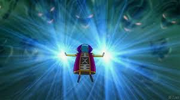

Cybersécurité divine avec humour galactique
ZenoBot est un bot Discord de cybersécurité inspiré de Zeno dans Dragon Ball. Il protège ton serveur contre les menaces, mais si quelqu’un ose polluer la planète... Zeno détruit tout (avec humour bien sûr) 😅.
